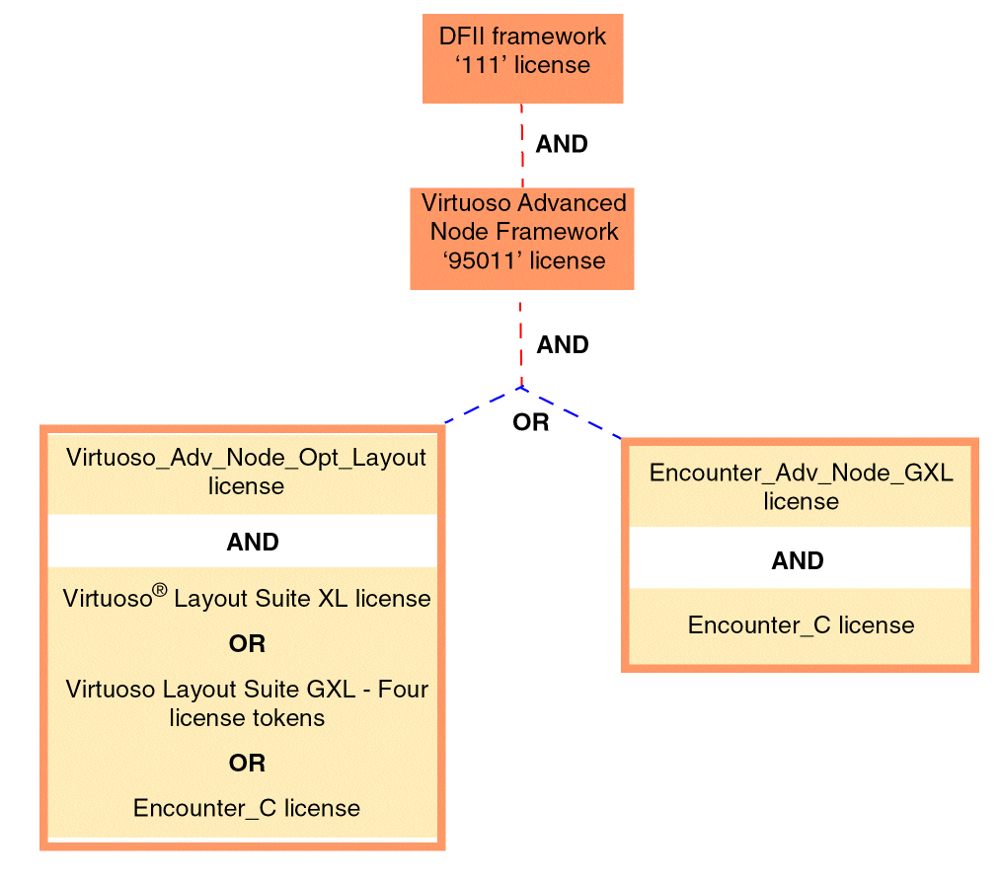
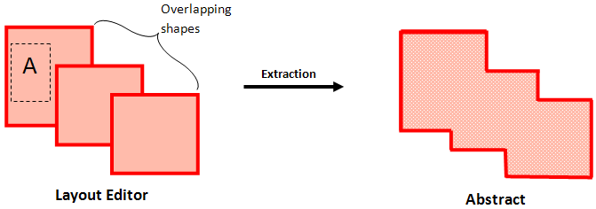

8
Multi-Patterning Technology Support in Abstract Generator (ICADVM20.1 Only)
This chapter discusses the following topics:
- Overview
- Prerequisites
- Color Representation for Pins
- Color Representation for Blockages
- Other Supported Blockage Colors
- Support for Trim Metal
- Multi-Patterning Technology (ICADVM20.1 Only)
- Enabling Coloring While Importing GDSII Information (ICADVM20.1 Only)
Overview
Virtuoso® Abstract Generator has been enhanced to support Multi-Patterning Technology (MPT). To handle color, the abstract representation now includes the color of pins and obstructions.
The following diagram depicts the process of generating a color-annotated abstract cellview from a color-annotated layout cellview and exporting the abstract cellview to LEF 5.8.
Pin and obstruction colors are represented in LEF 5.8 as:
For more information about MPT, see Virtuoso Multi-Patterning Technology User Guide.
Prerequisites
- The technology file must include the number mask.
-
The following figure describes the licensing requirements for Abstract Generator when using Virtuoso Multi-Patterning Technology:

Color Representation for Pins
This section provides information about the implementation of MPT in the following abstract generation steps.
Pins Step
Generating pins is the first step of the abstract generation process. Typically, in this step, Abstract Generator derives pin shapes from the text labels in the layout view and places them at the locations of the corresponding text labels.
To support MPT, in the layout editor, shapes are highlighted in different colors to represent different masks. During the Pins step, when searching for pin shapes and chasing shapes, Abstract Generator recognizes the effective color of shapes in the layout editor. Consequently, the pins that are generated inherit the colors of the shapes from which they are derived.
The color lock attribute of pins is forward-propagated to the abstract view. Consider a color locked pin in the layout design. In the abstract view, the color lock attribute is applied to all the pins in the layer in which the pin is located.
For more information about the Pins step, see Pins Step.
For more information about MPT, see Virtuoso Multi-Patterning Technology User Guide.
Extract Step
The Extract step is the second stage of abstract generation. This step traces the connectivity between shapes and terminals, starting at the pin shapes created in the Pins step.
To support MPT, during extraction, overlapping pins that lie on the same layer and on the same mask on the layout are merged in the abstract view. A single shape is generated by Abstract Generator.
Overlapping pins that are located on different masks on the layout are not merged in the abstract. Different pin shapes corresponding to the different masks are generated.
The layout editor has two overlapping shapes on Mask 1 and a third shape is on Mask 2. Notice that during extraction, overlapping shapes on the same mask are merged, whereas a separate pin shape is generated for the pin that lies on a different mask.
In the layout editor, overlapping shapes are on different masks. During extraction, pin merging does not happen. Separate pin shapes for each pin are generated in the abstract.
For more information about the Extract step, see Extract Step.
For more information about MPT, see Virtuoso Multi-Patterning Technology User Guide.
Abstract Step
The Abstract step is the third step of the abstract generation process. In this step, you can use the options in the Adjust tab to adjust pin shapes for creating the final required pin shapes. These pin shapes are then fractured into rectangles.
MPT support has been extended to the options on the Adjust tab of the Abstract step. Options for performing the following tasks now recognize the colors of the original shapes in the layout editor:
- Creation of square boundary pins for signal and power nets
- Creation of ring pins for power nets
- Creation of follow ring pins for power nets
- Grouping the power geometries
- Setting the options for CLASS CORE ports
- Creating CLASS BUMP ports
- Specifying power rail widths, offsets, and shapes
- Assigning layers for pin geometry
-
Fracturing pins
Pin shapes created using the above options inherit colors from the original shapes. For example, two pin shapes created by fracturing a single rectilinear shape will inherit the color of the original rectilinear shape.
Consider two pin shapes, A and B located on mask 1 and mask 2, respectively. Pin A is rectangular, whereas pin B is polygonal in shape.
During the abstract step, the rectangular pin shape is not fractured, whereas the polygonal pin shape is fractured into smaller rectangles. Thus, pin B is fractured into two rectangles, which remain on mask 2.
For more information about these options, see Abstract Step.
For more information about MPT, see Virtuoso Multi-Patterning Technology User Guide.
Color Representation for Blockages
Similar to shapes, blockages can be assigned a specific or no color. Blockages with specific color can be interpreted the same way as shapes with specific colors. Blockages at the same level of hierarchy with a particular color in a layout view should be at same-color spacing distance from shapes of the same color.
Blockage colors depend on the type of blockage.
Cover Blockage
A cover blockage covers an entire block for each metal layer used by the block. A cover blockage may have several underlying shapes of different colors. Therefore, cover blockages are assigned the ‘multi’ color option.
Shrink Blockage
A shrink blockage covers a set of shapes within a block. There can be multiple shrink blockages within a single block. Similar to cover blockages, shrink blockages can have multiple underlying shapes of various colors. Therefore, shrink blockages are also assigned the ‘multi’ color option.
Detailed Blockage
Detailed blockages cover individual geometries within blocks. This type of blockage is used for standard cells and possibly for higher-level routing layers in blocks. Unlike cover and shrink blockages, detailed blockage covers a single shape. Therefore, detailed blockages inherit the color of the parent shape.
Other Supported Blockage Colors
Apart from the ‘multi’ and individual shape colors, Abstract Generator supports the following blockage colors.
- Gray: Pins and blockages corresponding to isolated shapes in the layout editor are assigned the gray color. Such pins are colorable, which means that their color is driven by their environment. Gray pins can be connected using any colored wire. During the Pins and Extract steps, if any gray metal shapes are coincident with any colored shape on the same layer, then the gray shape is dropped.
- Black: Blockages defined in the layout editor to keep routing out of a particular region are assigned the black color. Other colored shapes are kept at different-color spacing away from a black blockage.
During abstract generation, the region corresponding to a black blockage is kept clear of any shapes.
Support for Trim Metal
Trim metal, also referred to as cut metal, is a physical layer used to trim portions of a metal layer to achieve tight end-to-end line spacing. Trim metals are defined in the technology file. They can be assigned to cut-colored (masks) or non-colored metal geometries.
A trim metal trims a specific color (mask) of metal in the layout. For example, TM_1 trims Metal2:mask1 and TM_2 trims Metal2:mask2. Therefore, in situations where a trim metal cuts multiple metal layers, only a specific metal layer is trimmed.
In the following diagrams, TM_1 is a trim metal that cuts only (Metal1 mask1); and TM_2 cuts only (Metal1 mask2). These trim metals:
In the first figure, there are continuous metal lines in the layout. These shapes are cut into two parts by trim metals, which can be connected to different nets, as shown in the second figure.
Trim metals can be assigned to:
- Non–colored (gray) metal geometries: You can specify the color of the metal layer to be trimmed.
- Cut-Colored metal geometries: Trims metal layers of the same color as the trim metal.
Abstract Generator has been enhanced to support trim metals. While loading a library, Abstract Generator automatically fetches information about trim metals from the technology file. Trim metals are recognized at each step of the abstract generation process. Therefore, at each step, metal layers are considered as effective after they are cut by trim metals in the previous step.
The following table summarizes the effect of trim metals in each step of the abstract generation process:
Return to top